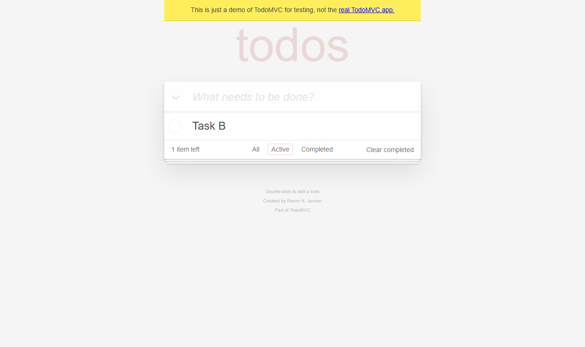
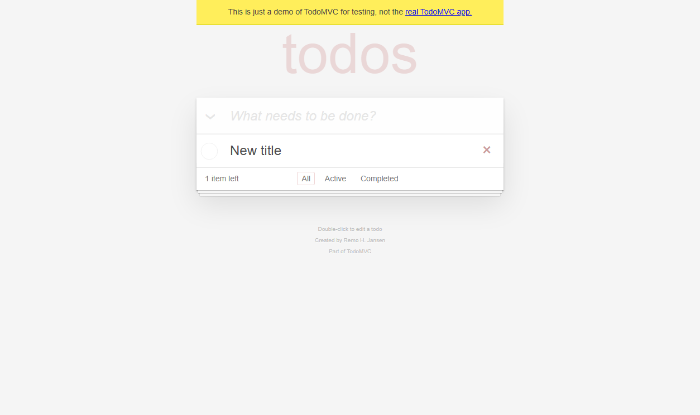
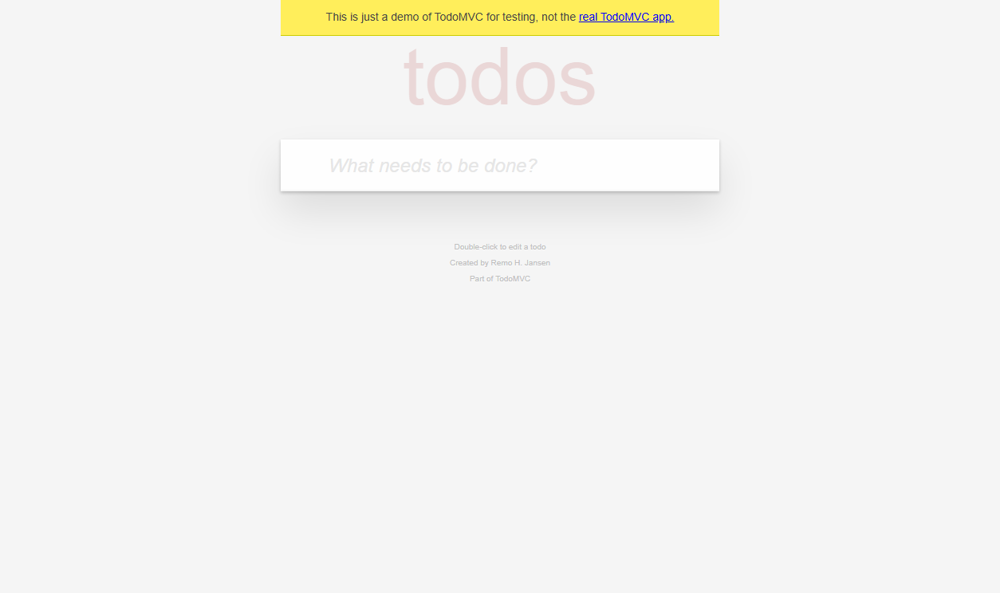
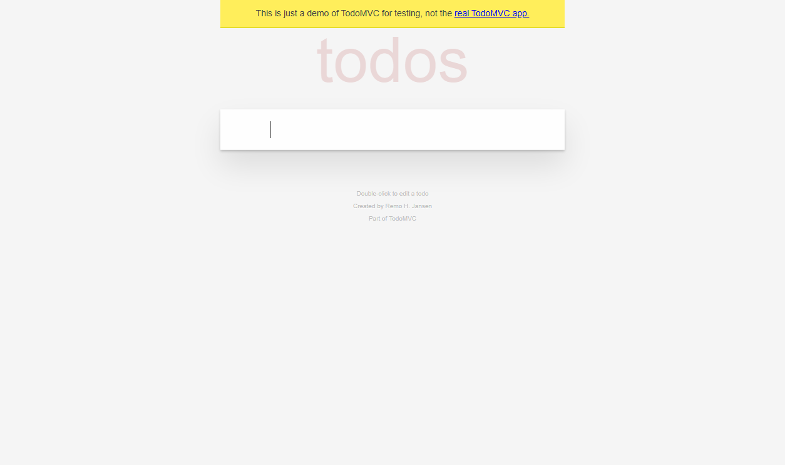
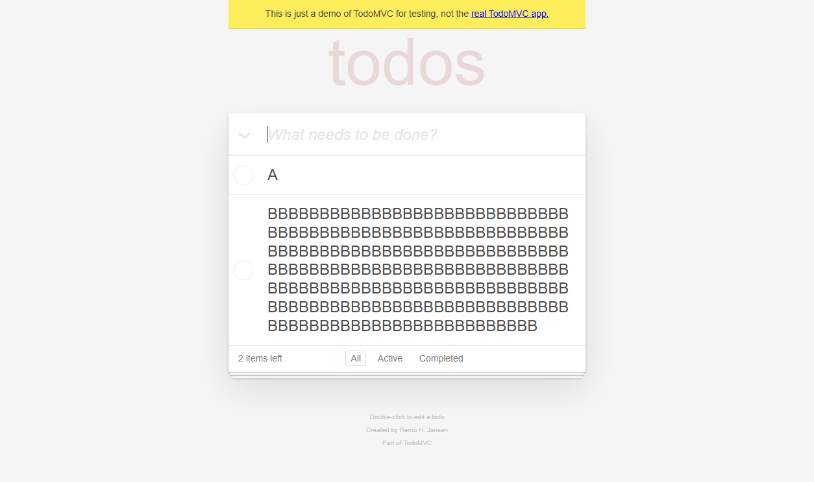
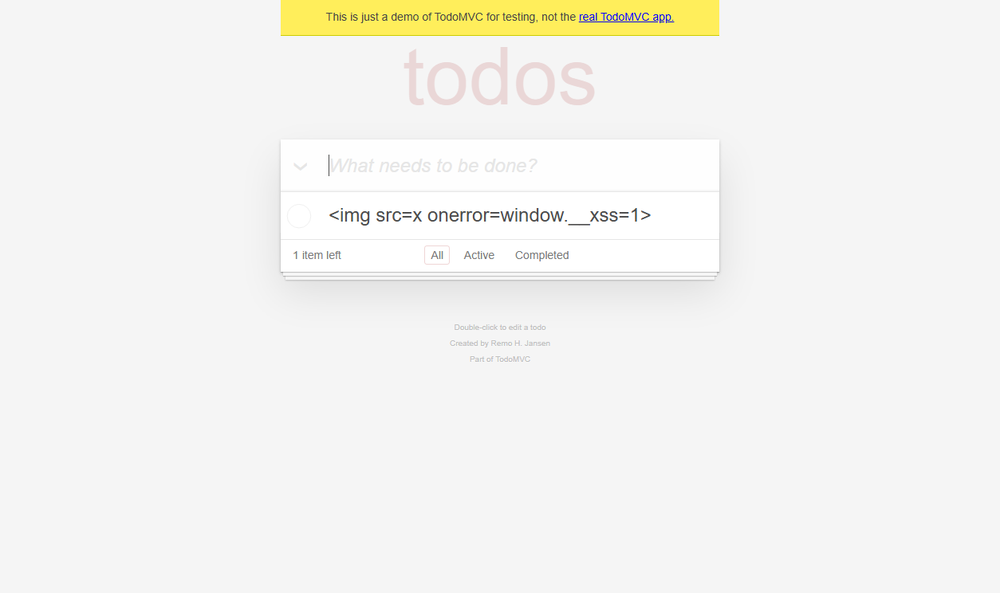
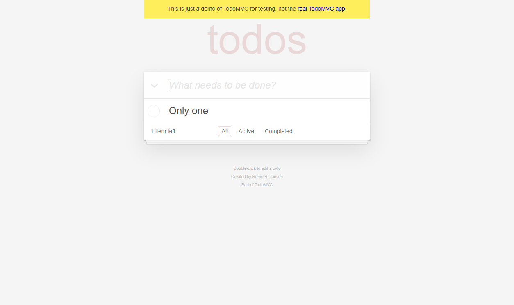
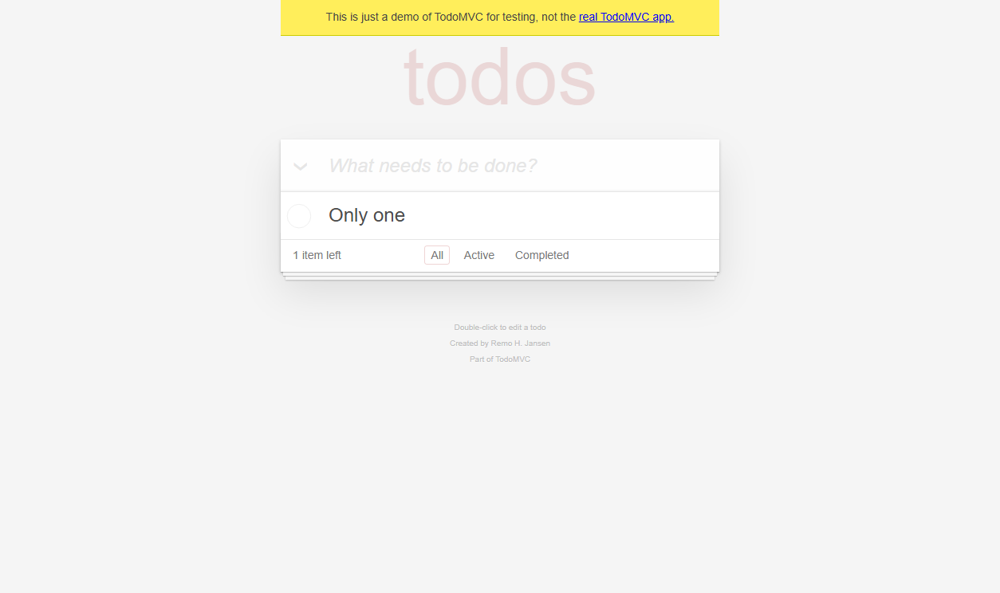

evidence/raw/RUN-20261031-BASELINE-01/TC-TODO-001/TC-TODO-001__case__element__20261030T164635-739.png生成时间：2026-10-31T00:57:25+08:00
运行 ID：RUN-20261031-BASELINE-01
目标：https://demo.playwright.dev/todomvc
状态：通过
交付门禁：WARNING（exit 0）
| 项目 | 内容 |
|---|---|
| 目标 URL | https://demo.playwright.dev/todomvc |
| 测试范围 | 未声明（来源：missing） |
| 需求来源 | 未找到本运行的用例表 |
| 用例表 | 未采集 |
| 用例设计文档 | 未采集 |
| 用例数 | 8 |
| 通过率 | 100.0%（7/7） |
本报告只陈述 manifest 中登记且能在 JUnit 与证据文件中追溯的结果；未执行、被跳过、受控预期失败的结果单独统计，不并入通过率。
| 项目 | 值 | 来源 | 运行记录原值 |
|---|---|---|---|
| 操作系统 | 11 | 运行记录 | 11 |
| 平台 | win32 | 运行记录 | win32 |
| Python | 3.13.9 | 运行记录 | 3.13.9 |
| Selenium | 4.51.0 | 运行记录 | 4.51.0 |
| pytest | 9.1.1 | 运行记录 | 9.1.1 |
| Chrome | Chrome 156.0.8078.74 | 运行记录 | Chrome 156.0.8078.74 |
| ChromeDriver | ChromeDriver 156.0.8078.80 (fb096c0011f9d50f0a264a9376420cdea9c421e3-refs/branch-heads/8078@{#1705}) | 运行记录 | ChromeDriver 156.0.8078.80 (fb096c0011f9d50f0a264a9376420cdea9c421e3-refs/branch-heads/8078@{#1705}) |
| Node.js | v24.14.1 | 运行记录 | v24.14.1 |
| 目标 URL | https://demo.playwright.dev/todomvc | 运行记录 | https://demo.playwright.dev/todomvc |
| Chrome 路径 | C:\Users\ | 运行记录 | C:\Users\ |
报告生成时探测，不是运行时刻记录；只作参考，不覆盖 manifest 中的运行环境（探测时间 2026-10-31T00:57:25+08:00）。这些值不覆盖上表的运行记录。
| 项目 | 探测值 |
|---|---|
| python | 3.13.9 |
| platform | Windows-11-10.0.26340-SP0 |
| os | 11 |
| pytest | 9.1.1 |
| selenium | 4.51.0 |
| chrome | 156.0.8078.74 |
| chrome_path | C:\Users\ |
| chromedriver | ChromeDriver 156.0.8078.80 (fb096c0011f9d50f0a264a9376420cdea9c421e3-refs/branch-heads/8078@{#1705}) |
| node | v24.14.1 |
| openpyxl | 3.1.5 |
| pillow | 12.2.0 |
设计方法分布按用例表 method 列聚合；无法聚合时明确标注，不做推测。
未找到本运行的用例表，无法从 method 列聚合设计方法分布。
manifest 登记 8 条（通过 7、受控预期失败 1、失败 0、未执行 0、跳过 0、阻塞 0）；JUnit tests=8、passed=7、failed=0、xfailed=1。xfailed 不计入通过率（100.0%（7/7））。
| 用例 ID | 标题 | 类型 | 优先级 | 方法与需求 | 状态 | 证据数 | 日志 |
|---|---|---|---|---|---|---|---|
| TC-TODO-001 | test_add_todo | 未登记 | 未登记 | 方法未登记 / 需求未登记 | 通过 | 3 | evidence/logs/RUN-20261031-BASELINE-01/TC-TODO-001.log |
| TC-TODO-002 | test_complete_and_filter | 未登记 | 未登记 | 方法未登记 / 需求未登记 | 通过 | 2 | evidence/logs/RUN-20261031-BASELINE-01/TC-TODO-002.log |
| TC-TODO-003 | test_edit_todo | 未登记 | 未登记 | 方法未登记 / 需求未登记 | 通过 | 1 | evidence/logs/RUN-20261031-BASELINE-01/TC-TODO-003.log |
| TC-TODO-004 | test_delete_todo | 未登记 | 未登记 | 方法未登记 / 需求未登记 | 通过 | 2 | evidence/logs/RUN-20261031-BASELINE-01/TC-TODO-004.log |
| TC-TODO-005 | test_empty_and_whitespace_rejected | 未登记 | 未登记 | 方法未登记 / 需求未登记 | 通过 | 1 | evidence/logs/RUN-20261031-BASELINE-01/TC-TODO-005.log |
| TC-TODO-006 | test_boundary_lengths | 未登记 | 未登记 | 方法未登记 / 需求未登记 | 通过 | 1 | evidence/logs/RUN-20261031-BASELINE-01/TC-TODO-006.log |
| TC-TODO-007 | test_text_is_escaped | 未登记 | 未登记 | 方法未登记 / 需求未登记 | 通过 | 1 | evidence/logs/RUN-20261031-BASELINE-01/TC-TODO-007.log |
| TC-TODO-099 | test_expected_failure_captures_evidence | 未登记 | 未登记 | 方法未登记 / 需求未登记 | 受控预期失败 | 4 | evidence/logs/RUN-20261031-BASELINE-01/TC-TODO-099.log |
状态：通过
类型：未登记 优先级：未登记 方法：未登记 需求：未登记
自动化：tests/test_todomvc.py::test_add_todo
日志：evidence/logs/RUN-20261031-BASELINE-01/TC-TODO-001.log
未登记
未登记
见断言明细（3 条断言）
运行记录未写入用例级预期
见断言明细（3 条断言）
| # | 断言 | 预期 | 实际 | 结果 |
|---|---|---|---|---|
| 1 | 待办列表包含新增项 | ['Buy milk'] | ['Buy milk'] | 通过 |
| 2 | 剩余计数为 1 | 1 item left | 1 item left | 通过 |
| 3 | 底部状态栏可见 | True | True | 通过 |
evidence/raw/RUN-20261031-BASELINE-01/TC-TODO-001/TC-TODO-001__case__element__20261030T164635-739.png
evidence/raw/RUN-20261031-BASELINE-01/TC-TODO-001/TC-TODO-001__case__fullpage__20261030T164635-879.pngevidence/raw/RUN-20261031-BASELINE-01/TC-TODO-001/TC-TODO-001__final__viewport__20261030T164635-979.pngEV-f150d28bc9 [element-screenshot] evidence/raw/RUN-20261031-BASELINE-01/TC-TODO-001/TC-TODO-001__case__element__20261030T164635-739.pngEV-126e4c6686 [fullpage-screenshot] evidence/raw/RUN-20261031-BASELINE-01/TC-TODO-001/TC-TODO-001__case__fullpage__20261030T164635-879.pngEV-2d67043862 [screenshot] evidence/raw/RUN-20261031-BASELINE-01/TC-TODO-001/TC-TODO-001__final__viewport__20261030T164635-979.png状态：通过
类型：未登记 优先级：未登记 方法：未登记 需求：未登记
自动化：tests/test_todomvc.py::test_complete_and_filter
日志：evidence/logs/RUN-20261031-BASELINE-01/TC-TODO-002.log
未登记
未登记
见断言明细（3 条断言）
运行记录未写入用例级预期
见断言明细（3 条断言）
| # | 断言 | 预期 | 实际 | 结果 |
|---|---|---|---|---|
| 1 | 完成后剩余计数为 1 | 1 item left | 1 item left | 通过 |
| 2 | Completed 仅显示已完成项 | ['Task A'] | ['Task A'] | 通过 |
| 3 | Active 仅显示未完成项 | ['Task B'] | ['Task B'] | 通过 |

evidence/raw/RUN-20261031-BASELINE-01/TC-TODO-002/TC-TODO-002__Active__fullpage__20261030T164637-352.png
evidence/raw/RUN-20261031-BASELINE-01/TC-TODO-002/TC-TODO-002__final__viewport__20261030T164637-437.pngEV-e50333fb0a [fullpage-screenshot] evidence/raw/RUN-20261031-BASELINE-01/TC-TODO-002/TC-TODO-002__Active__fullpage__20261030T164637-352.pngEV-e962f8944f [screenshot] evidence/raw/RUN-20261031-BASELINE-01/TC-TODO-002/TC-TODO-002__final__viewport__20261030T164637-437.png状态：通过
类型：未登记 优先级：未登记 方法：未登记 需求：未登记
自动化：tests/test_todomvc.py::test_edit_todo
日志：evidence/logs/RUN-20261031-BASELINE-01/TC-TODO-003.log
未登记
未登记
见断言明细（1 条断言）
运行记录未写入用例级预期
见断言明细（1 条断言）
| # | 断言 | 预期 | 实际 | 结果 |
|---|---|---|---|---|
| 1 | 标题被更新 | ['New title'] | ['New title'] | 通过 |

evidence/raw/RUN-20261031-BASELINE-01/TC-TODO-003/TC-TODO-003__final__viewport__20261030T164638-700.pngEV-3168e8184a [screenshot] evidence/raw/RUN-20261031-BASELINE-01/TC-TODO-003/TC-TODO-003__final__viewport__20261030T164638-700.png状态：通过
类型：未登记 优先级：未登记 方法：未登记 需求：未登记
自动化：tests/test_todomvc.py::test_delete_todo
日志：evidence/logs/RUN-20261031-BASELINE-01/TC-TODO-004.log
未登记
未登记
见断言明细（2 条断言）
运行记录未写入用例级预期
见断言明细（2 条断言）
| # | 断言 | 预期 | 实际 | 结果 |
|---|---|---|---|---|
| 1 | 列表被清空 | [] | [] | 通过 |
| 2 | 无待办时底部状态栏隐藏 | False | False | 通过 |

evidence/raw/RUN-20261031-BASELINE-01/TC-TODO-004/TC-TODO-004__case__fullpage__20261030T164639-843.png
evidence/raw/RUN-20261031-BASELINE-01/TC-TODO-004/TC-TODO-004__final__viewport__20261030T164639-948.pngEV-2c24c2e7f3 [fullpage-screenshot] evidence/raw/RUN-20261031-BASELINE-01/TC-TODO-004/TC-TODO-004__case__fullpage__20261030T164639-843.pngEV-5bf6851e8a [screenshot] evidence/raw/RUN-20261031-BASELINE-01/TC-TODO-004/TC-TODO-004__final__viewport__20261030T164639-948.png状态：通过
类型：未登记 优先级：未登记 方法：未登记 需求：未登记
自动化：tests/test_todomvc.py::test_empty_and_whitespace_rejected
日志：evidence/logs/RUN-20261031-BASELINE-01/TC-TODO-005.log
未登记
未登记
见断言明细（2 条断言）
运行记录未写入用例级预期
见断言明细（2 条断言）
| # | 断言 | 预期 | 实际 | 结果 |
|---|---|---|---|---|
| 1 | 空输入不新增待办 | [] | [] | 通过 |
| 2 | 纯空白输入不新增待办 | [] | [] | 通过 |

evidence/raw/RUN-20261031-BASELINE-01/TC-TODO-005/TC-TODO-005__final__viewport__20261030T164641-004.pngEV-e4712298d6 [screenshot] evidence/raw/RUN-20261031-BASELINE-01/TC-TODO-005/TC-TODO-005__final__viewport__20261030T164641-004.png状态：通过
类型：未登记 优先级：未登记 方法：未登记 需求：未登记
自动化：tests/test_todomvc.py::test_boundary_lengths
日志：evidence/logs/RUN-20261031-BASELINE-01/TC-TODO-006.log
未登记
未登记
见断言明细（2 条断言）
运行记录未写入用例级预期
见断言明细（2 条断言）
| # | 断言 | 预期 | 实际 | 结果 |
|---|---|---|---|---|
| 1 | 1 字符边界被接受 | ['A'] | ['A'] | 通过 |
| 2 | 200 字符输入被完整保存 | ['A', 'BBBBBBBBBBBBBBBBBBBBBBBBBBBBBBBBBBBBBBBBBBBBBBBBBBBBBBBBBBBBBBBBBBBBBBBBBBBBBBBBBBBBBBBBBBBBBBBBBBBBBBBBBBBBBBBBBBBBBBBBBBBBBBBBBBBBBBBBBBBBBBBBBBBBBBBBBBBBBBBBBBBBBBBBBBBBBBBBBBBBBBBBBBBBBBBBBBBBBBBB'] | ['A', 'BBBBBBBBBBBBBBBBBBBBBBBBBBBBBBBBBBBBBBBBBBBBBBBBBBBBBBBBBBBBBBBBBBBBBBBBBBBBBBBBBBBBBBBBBBBBBBBBBBBBBBBBBBBBBBBBBBBBBBBBBBBBBBBBBBBBBBBBBBBBBBBBBBBBBBBBBBBBBBBBBBBBBBBBBBBBBBBBBBBBBBBBBBBBBBBBBBBBBBBB'] | 通过 |

evidence/raw/RUN-20261031-BASELINE-01/TC-TODO-006/TC-TODO-006__final__viewport__20261030T164642-329.pngEV-fbe30bed45 [screenshot] evidence/raw/RUN-20261031-BASELINE-01/TC-TODO-006/TC-TODO-006__final__viewport__20261030T164642-329.png状态：通过
类型：未登记 优先级：未登记 方法：未登记 需求：未登记
自动化：tests/test_todomvc.py::test_text_is_escaped
日志：evidence/logs/RUN-20261031-BASELINE-01/TC-TODO-007.log
未登记
未登记
见断言明细（2 条断言）
运行记录未写入用例级预期
见断言明细（2 条断言）
| # | 断言 | 预期 | 实际 | 结果 |
|---|---|---|---|---|
| 1 | HTML 文本按纯文本展示 | ['<img src=x onerror=window.__xss=1>'] | ['<img src=x onerror=window.__xss=1>'] | 通过 |
| 2 | 未执行注入脚本 | None | None | 通过 |

evidence/raw/RUN-20261031-BASELINE-01/TC-TODO-007/TC-TODO-007__final__viewport__20261030T164643-134.pngEV-43450b2049 [screenshot] evidence/raw/RUN-20261031-BASELINE-01/TC-TODO-007/TC-TODO-007__final__viewport__20261030T164643-134.png状态：受控预期失败
类型：未登记 优先级：未登记 方法：未登记 需求：未登记
自动化：tests/test_todomvc_expected_failure.py::test_expected_failure_captures_evidence
日志：evidence/logs/RUN-20261031-BASELINE-01/TC-TODO-099.log
未登记
未登记
见断言明细（1 条断言）
运行记录未写入用例级预期
tests\test_todomvc_expected_failure.py:22: in test_expected_failure_captures_evidence case_ctx.check(page.count_text().startswith("2"), "受控失败断言", "2 items left", page.count_text()) tests\conftest.py:444: in check raise AssertionError(f"{name}: expected={expected!r} actual={actual!r}") E AssertionError: 受控失败断言: expected='2 items left' actual='1 item left'
| # | 断言 | 预期 | 实际 | 结果 |
|---|---|---|---|---|
| 1 | 受控失败断言 | 2 items left | 1 item left | 失败 |

evidence/raw/RUN-20261031-BASELINE-01/TC-TODO-099/TC-TODO-099__failure__viewport__20261030T164644-269.png
evidence/raw/RUN-20261031-BASELINE-01/TC-TODO-099/TC-TODO-099__failure__fullpage__20261030T164644-269.pngEV-37d4e8f0f5 [screenshot] evidence/raw/RUN-20261031-BASELINE-01/TC-TODO-099/TC-TODO-099__failure__viewport__20261030T164644-269.pngEV-cc5d0035a9 [fullpage-screenshot] evidence/raw/RUN-20261031-BASELINE-01/TC-TODO-099/TC-TODO-099__failure__fullpage__20261030T164644-269.pngEV-c1cbcf505f [page-source] evidence/raw/RUN-20261031-BASELINE-01/TC-TODO-099/TC-TODO-099__failure__page-source__20261030T164644-269.htmlEV-6cc3a4c13c [log] evidence/logs/RUN-20261031-BASELINE-01/TC-TODO-099__browser__20261030T164644-269.log本轮未登记产品缺陷。xfailed 用例只用于验证失败取证链路，不等同于产品缺陷。
本轮未生成差异图；有效截图证据见第 5 节。
| 指标 | 数量 |
|---|---|
| checked（登记） | 15 |
| ok（校验通过） | 15 |
| missing（文件缺失） | 0 |
| mismatched（哈希不一致） | 0 |
| cross_run（跨 run 引用） | 0 |
| unscoped（路径无 run id） | 0 |
| duplicates（重复登记） | 0 |
JUnit：
摘要：
tests=8 failures=0 errors=0 skipped=1 xfailed=1
| 测试函数 | 类 | 耗时(s) | 状态 | 信息 |
|---|---|---|---|---|
| test_add_todo | tests.test_todomvc | 4.168 | passed | |
| test_complete_and_filter | tests.test_todomvc | 1.36 | passed | |
| test_edit_todo | tests.test_todomvc | 1.151 | passed | |
| test_delete_todo | tests.test_todomvc | 1.166 | passed | |
| test_empty_and_whitespace_rejected | tests.test_todomvc | 0.933 | passed | |
| test_boundary_lengths | tests.test_todomvc | 1.214 | passed | |
| test_text_is_escaped | tests.test_todomvc | 0.7 | passed | |
| test_expected_failure_captures_evidence | tests.test_todomvc_expected_failure | 3.04 | xfailed | 受控失败：验证失败截图、日志和断言记录链路 |
未找到本运行的用例表，需求覆盖只能依据 manifest 中登记的 meta.requirement_ids。
本次未运行质量门禁（未找到 qualification/gate-runs/RUN-20261031-BASELINE-01/gate-report.json）。
结论：WARNING（退出码 0）
| 代码 | 级别 | 对象 | 说明 |
|---|---|---|---|
| CASE_EXPECTED_FROM_ASSERTIONS | WARNING | TC-TODO-001 | 用例级预期缺失或为历史断言取值，报告已回退到断言明细 |
| CASE_EXPECTED_FROM_ASSERTIONS | WARNING | TC-TODO-002 | 用例级预期缺失或为历史断言取值，报告已回退到断言明细 |
| CASE_EXPECTED_FROM_ASSERTIONS | WARNING | TC-TODO-003 | 用例级预期缺失或为历史断言取值，报告已回退到断言明细 |
| CASE_EXPECTED_FROM_ASSERTIONS | WARNING | TC-TODO-004 | 用例级预期缺失或为历史断言取值，报告已回退到断言明细 |
| CASE_EXPECTED_FROM_ASSERTIONS | WARNING | TC-TODO-005 | 用例级预期缺失或为历史断言取值，报告已回退到断言明细 |
| CASE_EXPECTED_FROM_ASSERTIONS | WARNING | TC-TODO-006 | 用例级预期缺失或为历史断言取值，报告已回退到断言明细 |
| CASE_EXPECTED_FROM_ASSERTIONS | WARNING | TC-TODO-007 | 用例级预期缺失或为历史断言取值，报告已回退到断言明细 |
| CASE_EXPECTED_FROM_ASSERTIONS | WARNING | TC-TODO-099 | 用例级预期缺失或为历史断言取值，报告已回退到断言明细 |
| CASE_TABLE_MISSING | WARNING | RUN-20261031-BASELINE-01 | 未找到本运行的用例表（没有 CSV 的 executed_in_run 包含 RUN-20261031-BASELINE-01） |
| QUALITY_GATE_NOT_RUN | WARNING | RUN-20261031-BASELINE-01 | 未找到质量门禁报告，交付结论只依赖本报告的门禁 |
tools/generate_report.py v2.02.0未采集